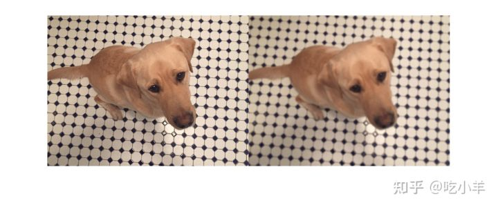
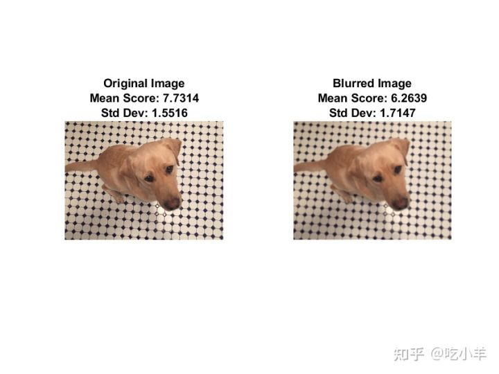
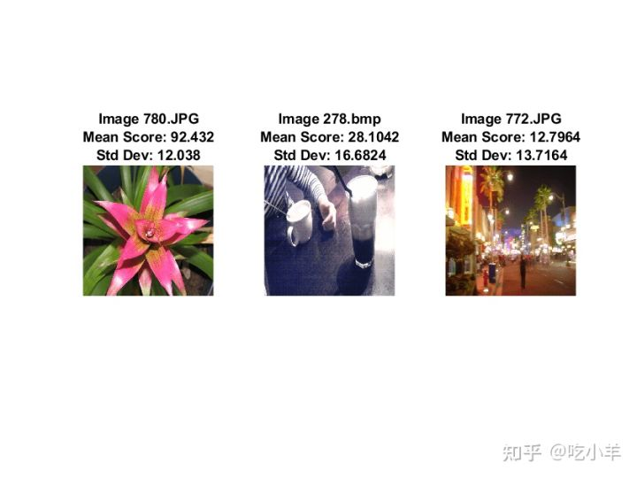
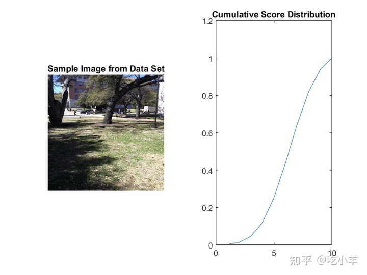

Home
本示例展示了如何使用神经图像评估 (NIMA，Neural Image Assessment) 卷积神经网络 (CNN，Convolutional Neural Network) 分析图像的美学质量。
图像质量指标提供了图像质量的客观度量。有效的度量标准提供与人类观察者对质量的主观感知密切相关的定量分数。质量指标可用以比较图像处理算法。
NIMA [1]是一种无参考技术，可在不依赖原始参考图像的情况下预测图像质量，而原始参考图像通常不可获得。NIMA 使用 CNN 来预测每个图像的质量分数分布。
使用经过训练的 NIMA 模型评估图像质量
使用辅助函数下载预训练的 NIMA 神经网络downloadTrainedNIMANet。辅助函数作为支持文件附加到示例中。该模型预测 [1, 10] 范围内每个图像的质量分数分布，其中 1 和 10 分别是分数的最低和最高可能值。高分表示良好的图像质量。
imageDir = fullfile(tempdir,"LIVEInTheWild");
if ~exist(imageDir,'dir')
mkdir(imageDir);
end
trainedNIMA_url = 'https://ssd.mathworks.com/supportfiles/image/data/trainedNIMA.zip';
downloadTrainedNIMANet(trainedNIMA_url,imageDir);
load(fullfile(imageDir,'trainedNIMA.mat'));
您可以通过比较高质量和低质量图像的预测分数来评估 NIMA 模型的有效性。
将高质量图像读入工作区。
imOriginal = imread('kobi.png');
通过应用高斯模糊来降低图像的美学质量。在蒙太奇中显示原始图像和模糊图像。主观上，模糊图像的审美质量比原始图像的质量差。
imBlur = imgaussfilt(imOriginal,5);
montage({imOriginal,imBlur})

使用predictNIMAScore辅助函数预测两个图像的 NIMA 质量分数分布。此函数作为支持文件附加到示例中。
predictNIMAScore函数返回图像的 NIMA 分数分布的均值和标准差。预测的平均分数是图像质量的度量。分数的标准偏差可以被认为是预测平均分数的置信水平的度量。
[meanOriginal,stdOriginal] = predictNIMAScore(dlnet,imOriginal); [meanBlur,stdBlur] = predictNIMAScore(dlnet,imBlur);
显示图像以及 NIMA 模型预测的分数分布的均值和标准差。NIMA 模型正确预测这些图像的分数，这些分数与主观视觉评估一致。
figure t = tiledlayout(1,2); displayImageAndScoresForNIMA(t,imOriginal,meanOriginal,stdOriginal,"Original Image") displayImageAndScoresForNIMA(t,imBlur,meanBlur,stdBlur,"Blurred Image")

本示例的其余部分展示了如何训练和评估 NIMA 模型。
下载 LIVE In the Wild 数据集
本示例使用 LIVE In the Wild 数据集[2]，这是一个公共领域的主观图像质量挑战数据库。该数据集包含由移动设备拍摄的 1162 张照片，并提供了 7 张额外的图像来训练人类记分员。每张图像均由 175 个人按照 [1, 100] 的等级进行评分。数据集提供了每个图像主观得分的平均值和标准偏差。
按照LIVE In the Wild Image Quality Challenge Database 中概述的说明下载数据集。将数据提取到imageDir变量指定的目录中。提取成功后，imageDir包含两个目录：Data和Images。
加载LIVE In the Wild数据
获取图像的文件路径。
imageData = load(fullfile(imageDir,'Data','AllImages_release.mat')); imageData = imageData.AllImages_release; nImg = length(imageData); imageList(1:7) = fullfile(imageDir,'Images','trainingImages',imageData(1:7)); imageList(8:nImg) = fullfile(imageDir,'Images',imageData(8:end));
Create an image datastore that manages the image data.
创建管理图像数据的图像datastore 。
imds = imageDatastore(imageList);
加载与图像对应的平均值和标准偏差数据。
meanData = load(fullfile(imageDir,'Data','AllMOS_release.mat')); meanData = meanData.AllMOS_release; stdData = load(fullfile(imageDir,'Data','AllStdDev_release.mat')); stdData = stdData.AllStdDev_release;
可选地，显示数据集中的一些样本图像，并带有相应的平均值和标准偏差值。
figure
t = tiledlayout(1,3);
idx1 = 785;
displayImageAndScoresForNIMA(t,readimage(imds,idx1), ...
meanData(idx1),stdData(idx1),"Image "+imageData(idx1))
idx2 = 203;
displayImageAndScoresForNIMA(t,readimage(imds,idx2), ...
meanData(idx2),stdData(idx2),"Image "+imageData(idx2))
idx3 = 777;
displayImageAndScoresForNIMA(t,readimage(imds,idx3), ...
meanData(idx3),stdData(idx3),"Image "+imageData(idx3))

预处理和增强数据
通过将图像大小调整为 256 x 256 像素来预处理图像。
rescaleSize = [256 256]; imds = transform(imds,@(x)imresize(x,rescaleSize));
NIMA 模型需要人主观打分的分布，但 LIVE 数据集仅提供分布的均值和标准差。使用createNIMAScoreDistribution辅助函数，近似 LIVE 数据集中每个图像的基本分布。此函数作为支持文件附加到示例中。
createNIMAScoreDistribution将分数重新调整到范围 [1, 10]，然后根据平均值和标准差值生成分数的最大熵分布。
newMaxScore = 10; prob = createNIMAScoreDistribution(meanData,stdData); cumProb = cumsum(prob,2);
创建一个arrayDatastore，管理分数分布的 。
probDS = arrayDatastore(cumProb','IterationDimension',2);
合并包含图像数据和分数分布数据的datastore。
dsCombined = combine(imds,probDS);
预览从合并的datastore中读取的输出。
sampleRead = preview(dsCombined)
sampleRead=1×2 cell array
{256×256×3 uint8} {10×1 double}
figure
tiledlayout(1,2)
nexttile
imshow(sampleRead{1})
title("Sample Image from Data Set")
nexttile
plot(sampleRead{2})
title("Cumulative Score Distribution")

拆分数据以进行训练、验证和测试
将数据划分为训练集、验证集和测试集。分配 70% 的数据用于训练，15% 用于验证，其余用于测试。
numTrain = floor(0.70 * nImg); numVal = floor(0.15 * nImg); Idx = randperm(nImg); idxTrain = Idx(1:numTrain); idxVal = Idx(numTrain+1:numTrain+numVal); idxTest = Idx(numTrain+numVal+1:nImg); dsTrain = subset(dsCombined,idxTrain); dsVal = subset(dsCombined,idxVal); dsTest = subset(dsCombined,idxTest);
增强训练数据
使用augmentImageTest辅助函数增强训练数据。此函数作为支持文件附加到示例中。augmentDataForNIMA函数对每个训练图像执行这些增强操作：
将图像裁剪为 224 x 244 像素以减少过度拟合。
以 50% 的概率水平翻转图像。
inputSize = [224 224]; dsTrain = transform(dsTrain,@(x)augmentDataForNIMA(x,inputSize));
计算用于输入归一化的训练集统计量
网络的输入层对训练图像执行 z-score 归一化。计算用于 z 分数归一化的训练图像的均值和标准差。
meanImage = zeros([inputSize 3]);
meanImageSq = zeros([inputSize 3]);
while hasdata(dsTrain)
dat = read(dsTrain);
img = double(dat{1});
meanImage = meanImage + img;
meanImageSq = meanImageSq + img.^2;
end
meanImage = meanImage/numTrain;
meanImageSq = meanImageSq/numTrain;
varImage = meanImageSq - meanImage.^2;
stdImage = sqrt(varImage);
将datastore 重置为其初始状态。
reset(dsTrain);
加载和修改 MobileNet-v2 网络
此示例从在 ImageNet [4]上训练的 MobileNet-v2 [3] CNN开始。该示例通过使用具有 10 个神经元的全连接层替换 MobileNet-v2 网络的最后一层来修改网络，每个神经元代表一个从 1 到 10 的离散分数。网络预测每个图像的每个分数的概率。该示例使用 softmax 激活层对全连接层的输出进行归一化。
函数mobilenetv2（来自深学习工具箱）返回一个预训练MobileNet-V2网络。此函数需要 Deep Learning Toolbox™ Model for MobileNet-v2 网络支持包。
net = mobilenetv2;
将网络转换为layerGraph对象（深度学习工具箱）。
lgraph = layerGraph(net);
该网络的图像输入大小为 224 x 224 像素。用图像输入层替换输入层，该层使用训练图像的均值和标准差对图像数据执行 z-score 归一化。
inLayer = imageInputLayer([inputSize 3],'Name','input','Normalization','zscore','Mean',meanImage,'StandardDeviation',stdImage); lgraph = replaceLayer(lgraph,'input_1',inLayer);
将原始最终分类层替换为具有 10 个神经元的全连接层。添加一个 softmax 层来规范化输出。将全连接层的学习率设置为基线 CNN 层学习率的 10 倍。应用 75% 的丢弃率。
lgraph = removeLayers(lgraph,{'ClassificationLayer_Logits','Logits_softmax','Logits'});
newFinalLayers = [
dropoutLayer(0.75,'Name','drop')
fullyConnectedLayer(newMaxScore,'Name','fc','WeightLearnRateFactor',10,'BiasLearnRateFactor',10)
softmaxLayer('Name','prob')];
lgraph = addLayers(lgraph,newFinalLayers);
lgraph = connectLayers(lgraph,'global_average_pooling2d_1','drop');
dlnet = dlnetwork(lgraph);
使用Deep Network Designer （深度学习工具箱）应用程序来可视化这个网络。
deepNetworkDesigner(lgraph)
定义模型梯度和损失函数
modelGradients辅助函数计算的网络训练每次迭代的梯度和损失。此函数在本示例的支持函数部分中定义。
NIMA 网络的目标是最小化参考基准和预测分数分布之间的推土距离 (EMD，Earth Mover's Distance)。EMD 损失在惩罚错误分类时考虑了类之间的距离。因此，EMD 损失比分类任务中使用的典型 softmax 交叉熵损失表现更好[5]。本示例使用earthMoverDistance辅助函数计算 EMD 损失。
对于 EMD 损失函数，使用r = 2的r -范数距离。当您使用梯度下降时，此距离允许轻松优化。
指定训练选项
指定 SGDM 优化选项。用 128 的小批量训练网络 150 次。
numEpochs = 150; miniBatchSize = 128; momentum = 0.9; initialLearnRate = 3e-3; decay = 0.95;
批量训练数据
创建一个（深度学习工具箱） minibatchqueue对象，用于管理自定义训练循环中的小批量样本。minibatchqueue对象还将数据转换为（深度学习工具箱）dlarray对象，该对象可在深度学习应用程序中实现自动区分。
将小批量数据提取格式指定为 ' SSCB'（空间、空间、通道、批处理）。将 'DispatchInBackground'名称-值参数设置为由canUseGPU返回的布尔值。如果支持的 GPU 可用于计算，则minibatchqueue对象在训练期间在并行池中的后台预处理小批量。
mbqTrain = minibatchqueue(dsTrain,'MiniBatchSize',miniBatchSize, ...
'PartialMiniBatch','discard','MiniBatchFormat',{'SSCB',''}, ...
'DispatchInBackground',canUseGPU);
mbqVal = minibatchqueue(dsVal,'MiniBatchSize',miniBatchSize, ...
'MiniBatchFormat',{'SSCB',''},'DispatchInBackground',canUseGPU);
训练网络
默认情况下，本示例加载 NIMA 网络的预训练版本。预训练网络使您无需等待训练完成即可运行整个示例。
要训练网络，请将doTraining以下代码中的变量设置为true。在自定义训练循环中训练模型。对于每次迭代：
使用（深度学习工具箱）函数next读取当前小批量的数据。
使用（深度学习工具箱）函数dlfeval和辅助函数modelGradients评估模型梯度。
使用（深度学习工具箱）函数sgdmupdate更新网络参数。
如果可用，则在 GPU 上进行训练。使用 GPU 需要 Parallel Computing Toolbox™ 和支持 CUDA® 的 NVIDIA® GPU。有关更多信息，请参阅GPU 版本支持（并行计算工具箱）。
doTraining = false;
if doTraining
iteration = 0;
velocity = [];
start = tic;
[hFig,lineLossTrain,lineLossVal] = initializeTrainingPlotNIMA;
for epoch = 1:numEpochs
shuffle (mbqTrain);
learnRate = initialLearnRate/(1+decay*floor(epoch/10));
while hasdata(mbqTrain)
iteration = iteration + 1;
[dlX,cdfY] = next(mbqTrain);
[grad,loss] = dlfeval(@modelGradients,dlnet,dlX,cdfY);
[dlnet,velocity] = sgdmupdate(dlnet,grad,velocity,learnRate,momentum);
updateTrainingPlotNIMA(lineLossTrain,loss,epoch,iteration,start)
end
% Add validation data to plot
[~,lossVal,~] = modelPredictions(dlnet,mbqVal);
updateTrainingPlotNIMA(lineLossVal,lossVal,epoch,iteration,start)
end
% Save the trained network
modelDateTime = string(datetime('now','Format',"yyyy-MM-dd-HH-mm-ss"));
save(strcat("trainedNIMA-",modelDateTime,"-Epoch-",num2str(numEpochs),".mat"),'dlnet');
else
load(fullfile(imageDir,'trainedNIMA.mat'));
end
评估 NIMA 模型
使用三个指标评估模型在测试数据集上的性能：EMD、二元分类准确度和相关系数。NIMA 网络在测试数据集上的性能与 Talebi 和 Milanfar [1]报告的参考 NIMA 模型的性能一致。
创建一个（深度学习工具箱）minibatchqueue对象来管理测试数据的小批量处理。
mbqTest = minibatchqueue(dsTest,'MiniBatchSize',miniBatchSize,'MiniBatchFormat',{'SSCB',''});
使用modelPredictions函数计算小批量测试数据的预测概率和真实累积概率。此函数在本示例的支持函数部分中定义。
[YPredTest,~,cdfYTest] = modelPredictions(dlnet,mbqTest);
计算参考基准和预测分布的均值和标准差值。
meanPred = extractdata(YPredTest)' * (1:10)'; stdPred = sqrt(extractdata(YPredTest)'*((1:10).^2)' - meanPred.^2); origCdf = extractdata(cdfYTest); origPdf = [origCdf(1,:); diff(origCdf)]; meanOrig = origPdf' * (1:10)'; stdOrig = sqrt(origPdf'*((1:10).^2)' - meanOrig.^2);
计算 EMD
计算参考基准和预测分数分布的 EMD。对于预测，使用r = 1的r范数距离。 EMD 值表示预测和真实评级分布的接近程度。
EMDTest = earthMoverDistance(YPredTest,cdfYTest,1)
EMDTest =
1×1 single gpuArray dlarray
0.1158
计算二元分类精度
对于二元分类准确性，将分布转换为两个分类：高质量和低质量。将平均分数大于阈值的图像分类为高质量图像。
qualityThreshold = 5; binaryPred = meanPred > qualityThreshold; binaryOrig = meanOrig > qualityThreshold;
计算二元分类准确率。
binaryAccuracy = 100 * sum(binaryPred==binaryOrig)/length(binaryPred) binaryAccuracy = 84.6591
计算相关系数
大的相关值表明参考基准和预测分数之间存在大的正相关。计算平均分数的线性相关系数 (LCC) 和斯皮尔曼等级相关系数 (SRCC)。
meanLCC = corr(meanOrig,meanPred)
meanLCC =
gpuArray single
0.7265
meanSRCC = corr(meanOrig,meanPred,'type','Spearman')
meanSRCC =
gpuArray single
0.6451
支持函数
模型梯度函数
modelGradients函数将dlnetwork对象dlnet和具有相应目标累积概率cdfY的小批量输入dlX数据作为输入。该函数返回损失梯度，损失梯度对应于在dlnet以及以及损失中的可学习参数。要自动计算梯度，请使用dlgradient函数。
function [gradients,loss] = modelGradients(dlnet,dlX,cdfY)
dlYPred = forward(dlnet,dlX);
loss = earthMoverDistance(dlYPred,cdfY,2);
gradients = dlgradient(loss,dlnet.Learnables);
end
损失函数
earthMoverDistance函数计算指定r范数的参考基准和预测分布之间的 EMD 。earthMoverDistance使用computeCDF辅助函数来计算预测分布的累积概率。
function loss = earthMoverDistance(YPred,cdfY,r)
N = size(cdfY,1);
cdfYPred = computeCDF(YPred);
cdfDiff = (1/N) * (abs(cdfY - cdfYPred).^r);
lossArray = sum(cdfDiff,1).^(1/r);
loss = mean(lossArray);
end
function cdfY = computeCDF(Y)
% Given a probability mass function Y, compute the cumulative probabilities
[N,miniBatchSize] = size(Y);
L = repmat(triu(ones(N)),1,1,miniBatchSize);
L3d = permute(L,[1 3 2]);
prod = Y.*L3d;
prodSum = sum(prod,1);
cdfY = reshape(prodSum(:)',miniBatchSize,N)';
end
模型预测函数
modelPredictions函数计算小批量数据的估计概率、损失和真实累积概率。
function [dlYPred,loss,cdfYOrig] = modelPredictions(dlnet,mbq)
reset(mbq);
loss = 0;
numObservations = 0;
dlYPred = [];
cdfYOrig = [];
while hasdata(mbq)
[dlX,cdfY] = next(mbq);
miniBatchSize = size(dlX,4);
dlY = predict(dlnet,dlX);
loss = loss + earthMoverDistance(dlY,cdfY,2)*miniBatchSize;
dlYPred = [dlYPred dlY];
cdfYOrig = [cdfYOrig cdfY];
numObservations = numObservations + miniBatchSize;
end
loss = loss / numObservations;
end
参考文献
[1] Talebi, Hossein, and Peyman Milanfar. “NIMA: Neural Image Assessment.” IEEE Transactions on Image Processing 27, no. 8 (August 2018): 3998–4011. https://doi.org/10.1109/TIP.2018.2831899
[2] LIVE: Laboratory for Image and Video Engineering. "LIVE In the Wild Image Quality Challenge Database." https://live.ece.utexas.edu/research/ChallengeDB/index.html
[3] Sandler, Mark, Andrew Howard, Menglong Zhu, Andrey Zhmoginov, and Liang-Chieh Chen. “MobileNetV2: Inverted Residuals and Linear Bottlenecks.” In 2018 IEEE/CVF Conference on Computer Vision and Pattern Recognition, 4510–20. Salt Lake City, UT: IEEE, 2018. https://doi.org/10.1109/CVPR.2018.00474
[4] ImageNet. http://www.image-net.org.
[5] Hou, Le, Chen-Ping Yu, and Dimitris Samaras. “Squared Earth Mover’s Distance-Based Loss for Training Deep Neural Networks.” Preprint, submitted November 30, 2016. https://arxiv.org/abs/1611.05916.
======================================================================
我的测试结果及程序
下面是我测试的代码：

注：本文根据MATLAB官网内容修改而成。